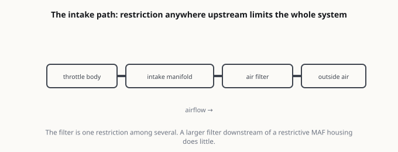
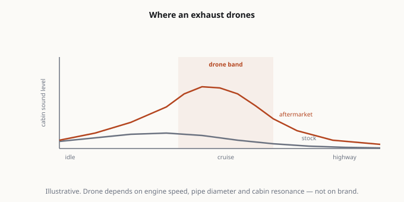

2.7L TurboMax 실버라도 콜드에어 인테이크: 효과인가, 소음인가?
콜드에어 인테이크는 레벨링 킷 다음으로 많이 사는 부품이고, 마케팅 문구와 오너가 실제로 느끼는 것 사이의 간격이 가장 큰 튜닝이기도 합니다. 저희 2026 RST는 2.7L 터보 4기통, 즉 TurboMax를 씁니다. KBB의 2026년 표기 기준 310마력 / 430 lb-ft 입니다. 꽤 흥미로운 엔진입니다. 대체한 4.3L V6보다 토크가 크고, 4기통에서 기대하기 어려운 저회전 토크를 냅니다. 그리고 그 터보가 있기 때문에, 이 트럭에서 인테이크의 거동은 자연흡기 5.3L과 다릅니다.
콜드에어 인테이크는 레벨링 킷 다음으로 많이 사는 부품이고, 마케팅 문구와 오너가 실제로 느끼는 것 사이의 간격이 가장 큰 튜닝이기도 합니다.
저희 2026 RST는 2.7L 터보 4기통, 즉 TurboMax를 씁니다. KBB의 2026년 표기 기준 310마력 / 430 lb-ft 입니다. 꽤 흥미로운 엔진입니다. 대체한 4.3L V6보다 토크가 크고, 4기통에서 기대하기 어려운 저회전 토크를 냅니다. 그리고 그 터보가 있기 때문에, 이 트럭에서 인테이크의 거동은 자연흡기 5.3L과 다릅니다.

인테이크가 할 수 있는 것과 없는 것
“15마력 향상”이라는 문구가 서로 다른 세 가지를 하나의 숫자로 뭉개버리니, 메커니즘부터 분리하겠습니다.
도움이 될 수 있는 지점: 순정 에어박스는 소음 저감을 우선하고 유량은 그다음으로 설계됩니다. 인테이크 레조네이터(소음기)와 박스의 방음 구조가 저항을 더합니다. 터보 엔진에서는 터보 앞단 저항을 줄이면 스풀이 아주 약간 빨라질 수 있고, 이는 최고 출력이 아니라 살짝 더 즉각적인 반응으로 느껴집니다. 실재하지만 작은 개선이며, 자연흡기보다 터보 엔진에서 더 나옵니다.
할 수 없는 지점: MAF 센서, 스로틀 바디, ECU 캘리브레이션이 여전히 병목입니다. 볼트온 인테이크는 ECU의 부스트 목표치를 바꿀 수 없습니다. 엔진 관리는 들어온 추가 공기에 맞춰 보정하고, 지시된 출력을 유지합니다. 튠을 안 하면 바뀌는 건 대부분 소리입니다.
실제로 얻는 것: 스로틀을 열 때 나는 흡기음입니다. 터보 4기통에서는 이 “쉬익-플러터” 소리가 출력 증가보다 훨씬 극적입니다. 상당수 오너는 순전히 그 소리 때문에 인테이크를 사고 만족합니다. 그건 정당한 이유입니다. 다만 스스로에게 성능 빌드라고 속이지는 마세요.

아무도 경고하지 않는 두 가지
1. 오일 필터와 MAF. 애프터마켓 인테이크 상당수가 오일을 바른 코튼 거즈 필터를 씁니다. 오일 과다 도포가 전형적인 고장 원인입니다. 오일이 하류로 흘러 MAF의 열선에 눌어붙고, 거친 아이들, 린 코드, 결국 P0171로 이어집니다. 오일식을 간다면 설명서가 권하는 양보다 적게 바르고, 필터를 손볼 때마다 전용 MAF 클리너로 청소하세요. 브레이크 클리너는 절대 쓰지 마세요.
2. 열기(heat soak)와 진짜 “콜드에어”. 콜드에어라고 팔리는 것의 절반은 엔진룸 안쪽 공기를 빨아들입니다. 정체 구간에서 공회전하거나 여름 더위에 작업하는 트럭은 흡기 온도가 올라가고 ECU가 점화 시점을 늦춥니다. 공장 펜더 위치에서 공기를 끌어오는 밀폐형 박스가, 방열판을 덧댄 오픈 콘보다 나은 경우가 많습니다. 브랜드가 아니라 필터가 실제로 어디서 공기를 가져오는지를 보세요.

2.7L에서의 현실적 기대치
저희 입장은 이렇습니다. 저희 차를 다이노에 올려 측정한 적이 없습니다. 그러니 마력 숫자를 지어내 드리지 않겠습니다. 대신 메커니즘이 뒷받침하는 것과 오너들이 일관되게 보고하는 것을 말씀드립니다.
- 소리의 변화는 뚜렷합니다. 특히 부하가 걸릴 때와 스풀 구간에서요.
- 튠 없이는 체감 출력 변화가 거의 없습니다. 누가 20마력을 느꼈다고 하면, 동시에 튠도 했는지 물어보세요. 보통은 했습니다.
- 공장 박스가 실제로 답답했다면 효율이 아주 조금 오를 수 있고, 아니었다면 거의 없습니다. 터보 엔진의 현대 순정 흡기는 애프터마켓이 말하는 것보다 잘 만들어져 있습니다.
이 돈을 먼저 쓸 곳
이 엔진에서 진짜 성능이 목적이라면 인테이크는 우선순위가 낮습니다. 2.7L TurboMax에서 대략 가성비 순으로:
- 튠. 부스트 목표와 변속 로직을 바꾸는 유일한 항목입니다. 동시에 보증에 가장 영향을 주는 튜닝이기도 하니, 하기 전에 그걸 이해하세요.
- 타이어. 대부분의 도로를 달리는 4x4에서 접지면이고, 순정 올시즌은 타협안입니다.
- 중량 감소. 공짜이고, 5,000 lb 트럭에서 가벼운 짐칸은 측정 가능한 차이를 냅니다.
- 인테이크와 배기. 소리와 캐릭터, 그리고 튠 후의 작은 실이득.
솔직한 정리
이 트럭에서 인테이크는 흡기음을 원하고 그 사실을 스스로에게 솔직히 인정한다면 사세요. 그 이유만으로도 괜찮은 구매입니다.
체감할 수 있는 출력 향상을 기대하고 사지는 마시고, 7월 정체 구간에서 뜨거운 엔진룸 공기를 마시는 오픈 콘형도 사지 마세요. 밀폐형 박스, 공장 펜더 흡기, 오일을 적게 바른 필터, 매 서비스마다 MAF 청소. 센서 하나와 린 코드 재진단에 주말을 날리지 않는 버전의 이 튜닝입니다.